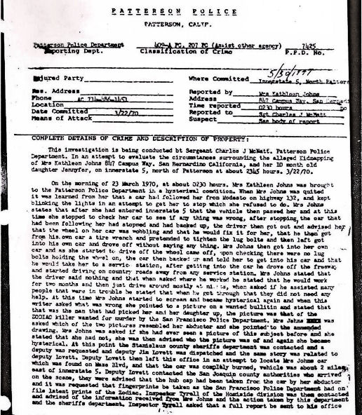
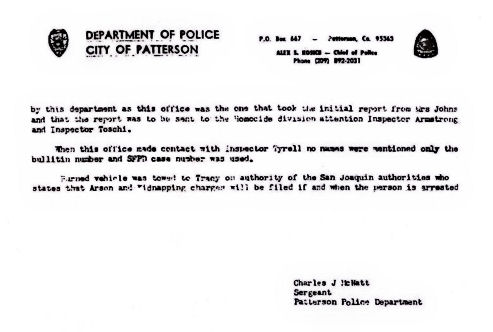
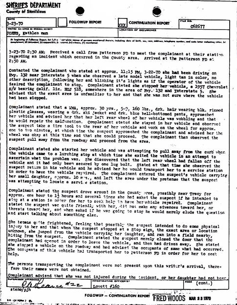
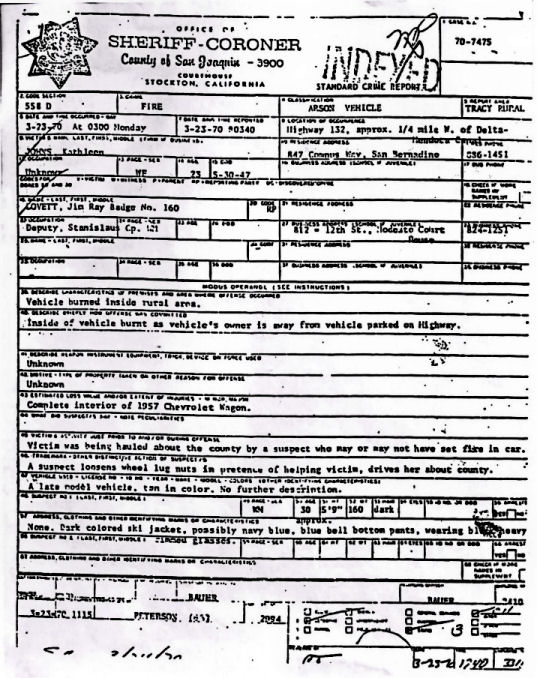
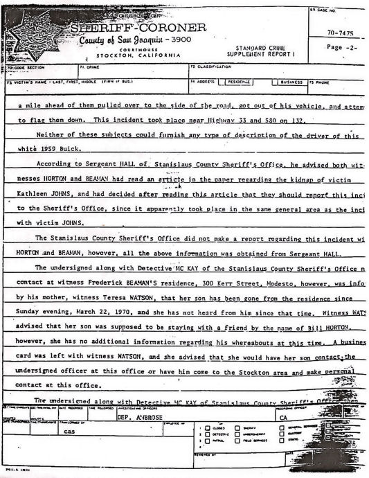
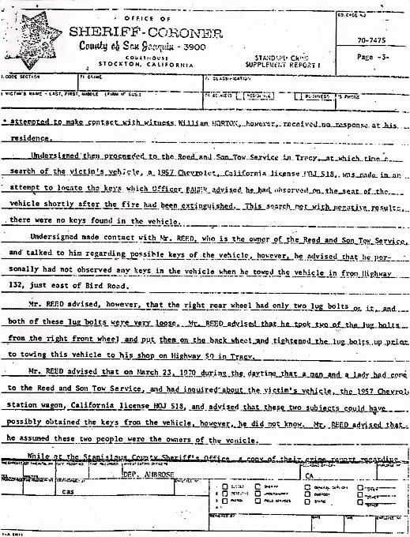
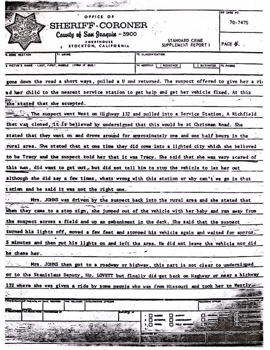
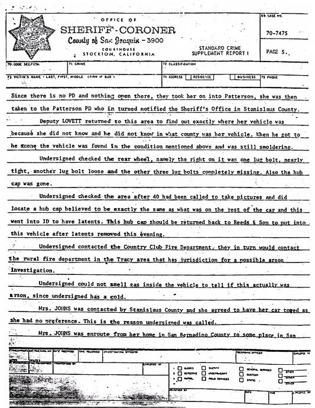
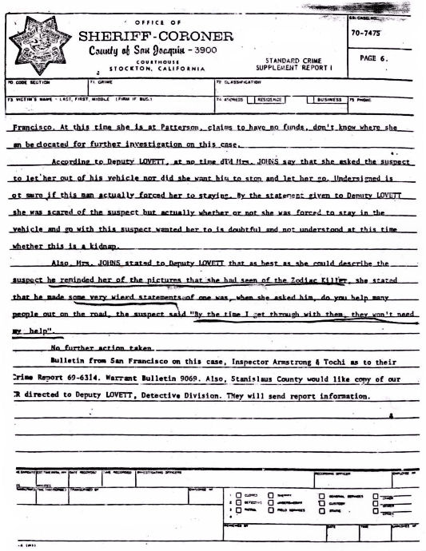

|
The
Kathleen Johns Police and Sheriff Reports |
|
|
| |
This is
the Zodiac speaking |
|
| |
. . . So
I now have a little list, starting with the woeman & her baby
that I gave a rather interesting ride for a coupple howers one
evening a few months back that ended in my burning her car where I
found them. |
|
|
|
A
portion of Zodiac's July 24, 1970 letter to the San Francisco
Chronicle |
|
|
|
It
certainly is strange that Zodiac would claim an obscure victim
when all other Zodiac victims were continuously mentioned in the
media. And especially when it ended in his failure
to kill said victim. Unless he was the responsible
person and really did intend to "finish the
job." Kathleen Johns has told the author that she did get
threatening phone calls after the incident and eventually received
a Halloween card in the mail! |
|
|
|
This
is the first time (December 2008) that these reports have ever
been made public in 38 years! |
|
|
|
Sgt.
McNatt's initial Patterson Police Crime Report (P.P.D. No. 7425) |
|
|
|
 |
|
|
|
 |
|
|
|
Note that the Sergeant uses the word
"hysterical" three times in describing Ms. Johns' emotional
condition when she arrived at the substation. He uses the word
"scream" once to depict her reaction when she inadvertently
saw the Zodiac composite on the wall of the station. She recognized this
image as the man who was driving her and her daughter around that
night. |
|
It was a shock to see he was wanted for
murder! |
|
|
|
This discounts those who say the
"stranger," or Zodiac, (as is believed by this site) had little effect on her and also
what Deputy
Lovett said, "I doubt this was a kidnap." Johns certainly
was terrorized as if she and her infant were kidnapped! |
|
|
|
A minute detail emerges when Sgt. McNatt asked
Kathleen which view on the poster looked more like the killer and she
selected the second drawing, which lends credibility to her knowing what
he looked like. She could have said "yes he looks like the drawings," or "he may look like the composite," but she said
he looked more like the amended drawing! |
|
|
|
She
also said she had not seen this likeness before, which is important. |
|
|
|
Stanislaus
County Sheriff's Deputy Lovett's Report (File No. C62677) |
|
|
|
 |
|
|
|
PAGE
MISSING |
|
|
|
This report has a page missing and every
effort is being made to find it. The missing pages
from this series of reports were lost in a residential move. |
|
________________ |
|
|
|
This interview takes place around 3:00
AM on 3/23/70 with an exhausted, pregnant woman who has been in an
emotional upheaval. Keep this in mind while she answers questions. The
deputy was probably feeling the late night experience too. |
|
|
|
The report says it was the "left
rear wheel" that the suspect said was wobbling. Yet Ms. Johns told
the author that it was the right rear wheel. The two truck drivers
confirmed this fact. Kathleen looked at the rear of her station wagon to see why
her car had "lurched forward" - especially since it was supposed
to have been "fixed," or so her midnight helper had said. She told the
author that the wheel was laying in a "grassy ditch or depression" along the
side of the road. |
|
|
|
Ms. Johns stated to the deputy that the suspect was
"friendly" towards her and made no threats during the beginning
of the ride. Johns told the
author that this deputy was not taking
notes! She did say that this was the stranger's demeanor at
the beginning of the ride but that later
he did make threats. However, he did not touch her or her infant. |
|
|
|
Note that the deputy writes "she
became quite frightened" and that she feared that he may try to do
some "physical act towards" her. This part was after
the ride had progressed and the suspect had made those threats, as given
in the Graysmith interview, (Johns told this author that she approved of
that interview.) in a monotone voice, "You know you're going to
die," "you know I'm going to kill you" and that he was
"going to throw the baby out" of the window. |
|
|
|
So a gap in the report is created by not
mentioning those three often repeated threats made by the stranger. This
is what "frightened" Kathleen, as given in the report. It has to
be scary enough of an experience to cause a young, pregnant woman,
clutching her baby, to leap from the car and run full pace into a nearby
field and actually lay over the child to muffle its cries! Why go through all this if the driver,
as in the words of the deputy, "merely" closed the door of his
car, sat there and then drove away! She did not, or would not, say "merely"
as being his expression to lighten the gravity of the situation. The
deputy seems to want to downgrade this event and not call it a kidnapping,
which would create ramifications, like bringing in the FBI for one. |
|
|
|
The stranger did close the passenger
door and drive off. The deputy neglects to say this was because
a truck driver stopped to inquire of him, "what's going on," as he saw the
man playing his light across the field searching for Johns. After the abductor "drove off at great
speed" she would not go near the truck driver until she got a
ride with some people, a lady and her son from Missouri. |
|
|
|
San
Joaquin County Sheriff's Crime Report (Case No. 70-7475) |
|
|
|
 |
|
|
|
San
Joaquin County Sheriff's Deputy Ambrose's Supplement Report (Case
No. 70-7475) |
|
|
|
PAGE
MISSING |
|
|
|
The first page of this crime supplement
report is missing and every effort is being made to locate it. |
|
|
|
 |
|
|
|
On page two an
"incident" occurred that may have been related to the Johns
abduction. Two men, Horton and Beaman, were driving on Highway 132 in the
area where the Johns incident took place. As they were driving, a
white 1959 Buick passed by them. (Or was it a white Chevy? Cars, with a
short view time and especially at night, are misidentified all the time.) A
short time later that same car was parked along-side the road and the
driver was waving his hands trying to flag down the two men! They kept
driving. When they read the next day,
the 23rd, about the Kathleen Johns event they contacted the police and told their story. It was felt this
experience by the two men may have been connected to the Johns incident.
Later, the authorities were unable to locate these two men. |
|
|
|
Robert Graysmith
tells of incidents in the same month, March 1970, where female drivers
were followed by a young man driving a white 1962-4 Chevy. Three different
female drivers in the early morning hours were followed by the
aforementioned driver. The man was stopped but he said he was lost and the
police, unwisely, escorted him out of town! On March 17th a female driver was followed by a white Chevy. The driver began
"blinking his lights and honking his horn," the same thing that
was to happen to Kathleen five days later! The woman was
able outdistance him and she later reported the incident. |
|
|
|
 |
|
|
|
On
page three an attempt was made to locate Johns' keys. In an interview with
Robert Graysmith she said - and she told this author the same thing - that
the stranger pocketed the keys. She didn't seem to have an ignition key,
but her other keys were on a holder. They were never recovered. |
|
|
|
PAGE
MISSING |
|
|
|
 |
|
|
|
Page four says that
Johns did not ask the man to let her out. Why would she? They were in the
middle of nowhere late at night and she had a baby and was seven months
pregnant!
She later said she
was extremely scared of the driver. Even the skeptical reporting deputy
does write "she was very scared" of the driver. She was, though,
waiting for a chance to escape when she just couldn't take it anymore
after she kept asking, "what's wrong with this station" or
"why can't
we go in that station."
She had decided to
try and stay outwardly "calm" as any possible wrong move on her part may
cause the stranger to react violently. From her past experiences with patients
(she was a nurse) she felt he was mentally ill. |
|
|
|
Finally,
her chance came when the driver took the wrong turn off and she leaped from
the car telling the man she was getting sick (as per the Modesto Bee
account.) He probably thought that since she was pregnant this was true
and he hesitated to do anything but park.
But Kathleen kept
running away from the car to a field to hide and to protect her infant.
The report says this man did not chase her, but Johns was there and she
told this author he did chase after her. Why it never went into the report she did not
know. |
|
|
|
 |
|
|
|
This deputy did have
a cold. Everyone knows how miserable this can be and can interfere with
cognition. He claims on page
five this is why he could not tell what kind of substance was used to set
the station wagon on fire!
Also, Kathleen told the author
the deputy did not take notes and acted
suspicious of her story. This is evident on page six. |
|
|
|
 |
|
|
|
On page six Deputy Ambrose relates that it was "doubtful" whether
she was "forced" to stay with the suspect and that it was
"not understood" by him "whether this is a kidnap"! Only one of
Kathleen's statements was written down and that was how that when asked by Johns if he
"always helped people out in this manner" he said that when he "got through
with them they didn't need help anymore." Note the report says the driver
made "very weird statements" (note the plural) and one of which
was the aforementioned statement. Where are the
quotes for the other "very weird statements"?
Remember, Deputy Ambrose did not take notes while questioning Ms. Johns.
|
|
|
|
So the deputy failed to take down all of the statements made by the
stranger as given by Johns. She told the author she did tell the deputy
that the
driver made threats, two of which were about "throwing the baby
out" and that she was "going to die." |
|
|
|
This is police
reporting at its worst! |
|
|
|
The deputy seemed to have wanted this incident to stay out of the kidnap category.
The FBI would then be called in and lots of work, including paper work would
have to be done. This was a very conservative community and it would then
be subject to reporters and the like. Johns' friend, as
well as Kathleen, said that they seemed to have regarded her as a
"hippie type." Her manner of dress was unorthodox to be sure, but this should
never have interfered with a professional investigation.
The Napa PD reports on Zodiac are far more detailed
and fact filled than these. |
|
|
|
These reports are
dismal - at best! |
|
|
|
|
|
Back
Top
of page |
|
|
|
|